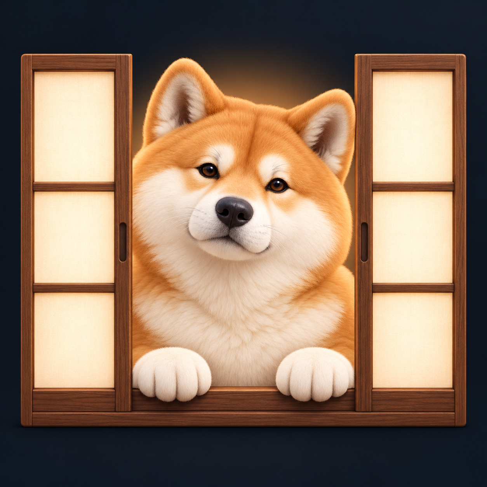

Shoji / Decoration study 01
A quiet threshold.
A familiar face.
Hachi waits at the edge of the workspace. Warm fur and paper-soft details bring a little companionship to the glass shelf.
01 / A small request for attention
32 pt Hachi, inside the card. The status ring, title and count stay in place.
Agents
!CLAUDE
auth-refactorWaiting for permission1CLAUDE6m
extension popupgosta-browser-extension✓CODEX14m
helm cleanuphome-lab/k3sTASK
api stackdocker compose upextension popup ~/code/gosta-browser-extension
❯ tidy the settings toolbar
● Read src/settings/Toolbar.tsx
Working…
02 / Hub attention card
A 48 pt companion beside the existing status and thread title.
!
auth-refactor~/code/gosta · CLAUDE
Needs you
Waiting for permission
03 / The shelf is empty
Reserve the resting pose for a workspace with zero threads.
Your next thread starts here
Open an agent or start a task.

04 / At the shoji
App icon concept. Hachi is the focal point; sliding paper panels frame the welcome.
Presentation mask only. Source PNG is square.Edge & size checks
The same cutout on ink, warm paper and a transparency grid.